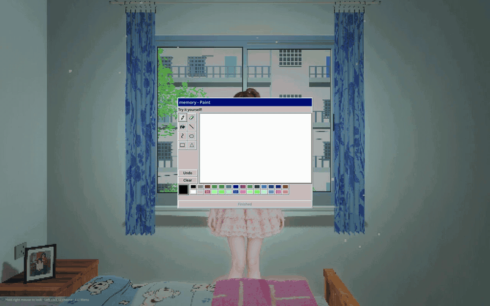

What are we really longing for?
Lost Dreams is a narrative exploration game set in a Chinese family home at the turn of the millennium. You return to a room from memory — touching old belongings, switching on the computer, listening to the voices on the TV — and over three nights you drift into three different dreams.
As children, we couldn’t wait to grow up; once grown, we began to miss the past. The people in the dreams carry what we imagined the future would be at different ages, while the era we look back on slowly fills with things that never belonged to it. So the game asks: is it an era we long for, or a version of ourselves that never has to face the present?
Explore old belongings, talk with the people in your dreams, and draw a fish of your own. As the three nights unfold, the light, the sounds and the familiar objects begin to show cracks. In the end, you leave the old home by the stairs and look back once more at the dream you once had: the fish and the memories stay in the dream, and you return to today.

The old home
The old home, night one
Dreams
The dream, night one
People in the dreams
Night one: a conversation in the dream
Interactions
Drawing the fish from memory